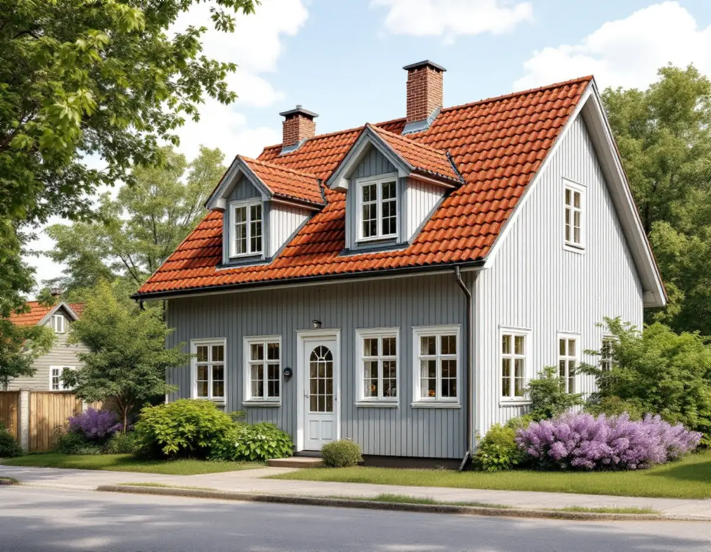
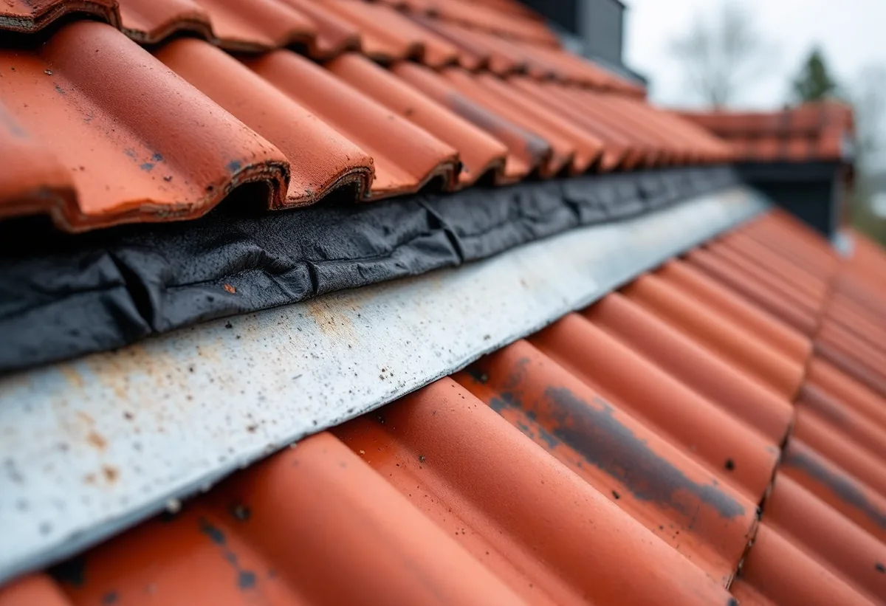
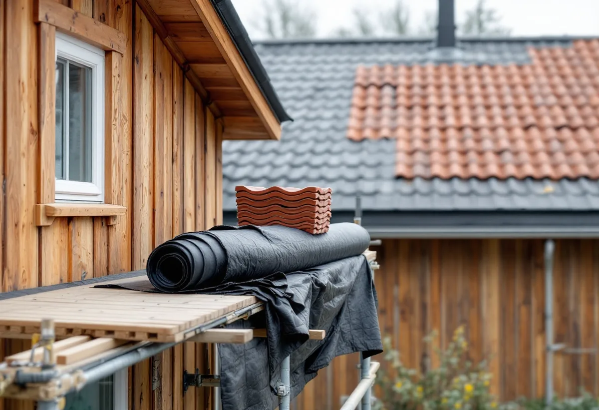

Platsbesök
Vi bedömer taket, vinden och takformen och noterar material och kulör.
Sedan den 1 december 2025 behövs normalt inget bygglov för att byta taket på en villa i Järfälla. Det betyder också att dokument och ritningar inte längre arkiveras hos kommunen. Geal Entreprenad AB byter tak i hela Järfälla och ser till att du har papperen på vad som gjordes.

Järfälla kommun skriver att det kan vara en lovpliktig fasadändring att byta takmaterial, ändra färg på taket eller på annat sätt ändra takets utseende. För ett en- eller tvåbostadshus krävs ändå inget bygglov för en fasadändring, med två undantag: om huset eller området är särskilt värdefullt, eller om detaljplanen har en utökad lovplikt. Ändringen ska dessutom stämma med detaljplanen eller vara en liten avvikelse som inte motverkar planens syfte.
Takformen är en annan sak. Kommunen skriver att den som vill ändra lutningen eller höja taket, till exempel byta från platt tak till sadeltak, oftast gör en tillbyggnad eftersom byggnadens volym ändras. Ett takbyte med samma form och lutning är alltså en enklare fråga än ett byte där taket samtidigt byggs om. En anmälan behövs om bärande konstruktion påverkas väsentligt.

På sidan om bygglovsbefriade åtgärder påminner kommunen om att sådana åtgärder fortfarande omfattas av Boverkets byggregler och kan kräva anmälan. Som fastighetsägare ansvarar du själv för att reglerna följs. Kommunen uppmanar därför till att dokumentera hur kraven uppfylls och att spara alla dokument och ritningar, eftersom de vid bygglovsbefriade åtgärder inte längre arkiveras hos kommunen.
För ett tak betyder det en pärm eller mapp med det skriftliga kostnadsförslaget, produktbladen för pannor eller plåt, underlagspapp och läkt, fotografier av råsponten innan den täcktes och en beskrivning av vad som byttes. Vill du sälja huset om några år kan just det vara svaret på frågan om när taket lades och hur. Kommunen skriver också att du ska försäkra dig om att den du anlitar har rätt kompetens, eftersom du som byggherre har det juridiska ansvaret.
För alla bygglovsbefriade åtgärder går det att söka ett frivilligt bygglov. Järfälla kommun beskriver det som en trygghet inför en större investering, och ett sätt att säkerställa att det som byggs följer regler, krav och detaljplan. För ett tak kan det vara värt att överväga när materialet byts mot något helt annat eller när huset ligger i ett område där du är osäker på planens bestämmelser.
Söker du lov ska ansökan enligt kommunen innehålla en situationsplan, en planritning, en fasadritning där ändringen är markerad och ett förslag till kontrollplan. Påverkas den bärande konstruktionen krävs också en konstruktionsritning. Vi tar fram uppgifterna om material, kulör och utförande som ritningen och kontrollplanen behöver.
Kulturmiljöplanens del om Kallhäll beskriver Björkliden, där tomter för egnahem började styckas av 1912. Området lockade Bolinderarbetare som ville bygga eget, och det blev en del av Järfälla först 1955. Husen är egnahem med enkel utformning, vanligen i en våning med källare och inredd vind. Taken är sadeltak, ofta brutna, med brant fall, och det vanligaste takmaterialet är rött lertegel.
Planen noterar att flera egnahem har förändrats genom att traditionella material och färger bytts ut mot modernare, och föreslår utökad rådgivning vid bygglovsansökningar för att behålla traditionella material. Ett brutet tak har två lutningar på varje sida, och brytlinjen behöver egen plåt och omsorg när underlaget läggs. Om lertegeltak och radhuslängor i kommunen kan du läsa under takrenovering i Järfälla, om takvatten under plåtslagare i Järfälla och om våra tjänster under takläggare i Järfälla.

Vi bedömer taket, vinden och takformen och noterar material och kulör.
Detaljplanen kontrolleras, och vi går igenom om ett frivilligt lov är värt att söka.
Material, underlag och arbetsmoment beskrivs så att det kan sparas.
Gammalt tak rivs, råsponten fotograferas och nytt underlag, läkt och tak läggs.
Brytlinjer, skorsten och takfot plåtas, och rännorna ses över.
Du får produktblad, foton och en beskrivning av vad som gjordes.
Skatteverket räknar byte av takpannor, plåttak, hängrännor och stuprör på ett småhus som rotarbete, och även att montera och montera ner byggnadsställningen och att byggstäda efter arbetet. Du behöver äga huset medan arbetet utförs och helt eller delvis bo i det.
Avdraget är högst 30 procent av arbetskostnaden, högst 50 000 kr per person och år och högst 75 000 kr tillsammans med rutavdrag. Material, resor och bortforsling ger inget avdrag. Geal drar ROT direkt på fakturan.
Takets yta, om taket är brutet eller rakt, valet av material, hur mycket råspont och läkt som behöver bytas, plåtarbetena och om du vill söka frivilligt lov med ritningar. Läs mer i vad kostar ett takbyte. Efter ett gratis platsbesök får du ett skriftligt kostnadsförslag.
Byte av tegel-, betong- och plåttak.
Takbyte →Takbyte, takbesiktning och plåtarbeten.
Takläggare i Järfälla →Jakobsberg, Viksjö och Kallhäll.
Takrenovering i Järfälla →Förråd, garage och ateljé som blir bostad.
Attefallshus i Järfälla →Planbesked, extra bostad och ansvar.
Byggföretag i Järfälla →Underhållsmålning i rätt tid.
Fasadmålning i Järfälla →Kedjehus, sekelskiftesvillor och parstuga i Stäket.
Fasadrenovering i Järfälla →Bruksvillor, radhus och 70-talsfönster i Järfälla.
Fönsterbyte i Järfälla →Bottenstycken, bleck och vita omfattningar.
Fönsterrenovering i Järfälla →Kedjehus, egnahem och gamla golvskikt.
Golvläggare i Järfälla →Slipa och behandla trappan i huset.
Golvslipning i Järfälla →Kedjehus, radhus och souterräng.
Köksrenovering i Järfälla →Stuprör, skärmtak och plåttak i Järfälla.
Plåtslagare i Järfälla →Förgårdar, förråd och ytterdörrar.
Snickare i Järfälla →Radhus, kedjehus och souterränghus.
Badrumsrenovering i Järfälla →Putsade radhus, kedjehus och villor i Järfälla.
Målare i Järfälla →Ny tapet på skivväggar i radhus.
Tapetsering i Järfälla →Flytta badet och mät radon.
Totalrenovering i Järfälla →